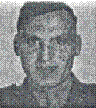

Sgt Alva E Anderson: Departed the USA with Company C. He was a member of the First Platoon. Wounded on Iwo Jima on February 19, 1945 and died of the wounds on February 26, 1945. At the time he was wounded he was serving as First Squad Leader in the First Platoon
Created by Rowland Lewis
Last Modified 08/01/99